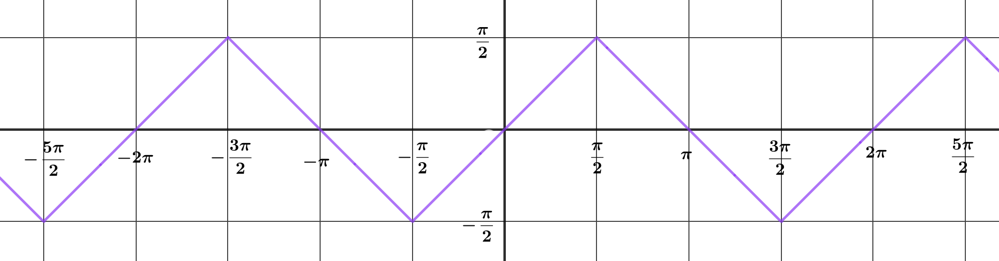
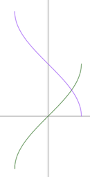
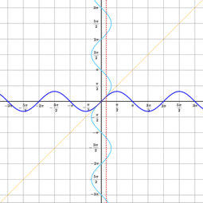
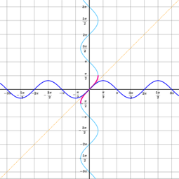
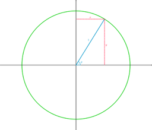
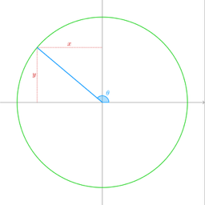
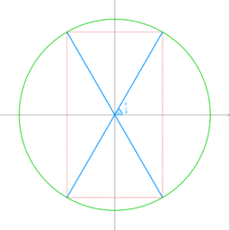
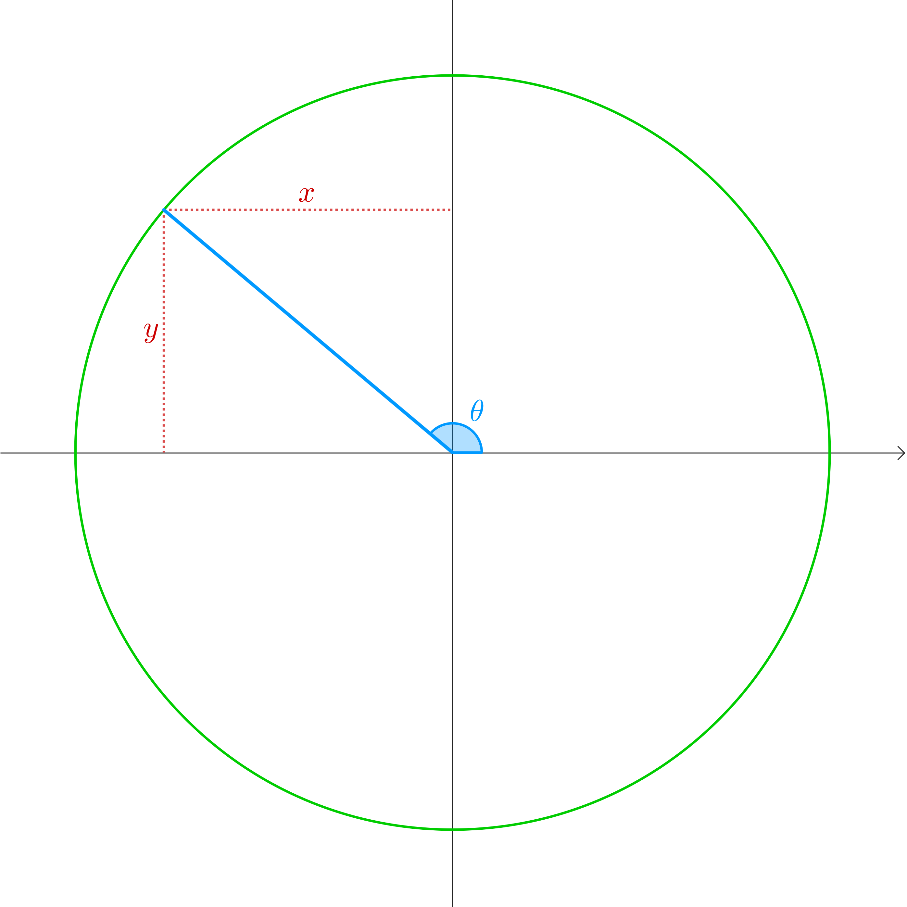

circular functions 10
Early in your students’ mathematical careers, they will have happily use the \(\sin^{- 1}\) key on their calculators to find angles in right-angled triangles when they know side lengths. This is probably one of their earliest encounters with the idea of the inverse of a function, although of course it is not framed this way.
At the start of our work on circular functions, we spent plenty of time separating these functions from right-angled triangles using the unit circle. From there, we generated graphs of the circular functions. It’s time to look at a similar process for their inverses. In right-angled triangles, we are only dealing with angles between \(0\) and \(\frac{\pi}{2}\). For each ratio of two sides, there is only one possible angle, so in this range, the inverse functions are well defined. However, when we look at angles outside this range, it is not immediately clear what the inverses of the functions might be. For example:
\(\sin\frac{\pi}{6} = \sin\frac{5\pi}{6} = \sin\frac{13\pi}{6} = \sin\frac{17\pi}{6} = \ldots = \frac{1}{2}\).
So is \(\sin^{- 1}\frac{1}{2} = \frac{\pi}{6}\text{or}\frac{5\pi}{6}\text{or}\frac{13\pi}{6}\text{or}\frac{17\pi}{6}\text{or}\ldots\) ?
and is \(\sin^{- 1}\left( - \frac{1}{2} \right) = - \frac{\pi}{6}\text{or}\frac{11\pi}{6}\text{or} - \frac{5\pi}{6}\text{or}\frac{7\pi}{6}\text{or}\ldots\) ?
Similar questions arise for the inverses of the other circular functions.
The answer is, in general, that we make the simplest possible choice, so, for example:
\[\begin{matrix} & \sin^{- 1}\frac{1}{2} = \frac{\pi}{6} & \sin^{- 1}\left( - \frac{1}{2} \right) = - \frac{\pi}{6} \\ \phantom{-} & & \\ & \cos^{- 1}\frac{1}{2} = \frac{\pi}{3} & \cos^{- 1}\left( - \frac{1}{2} \right) = \frac{2\pi}{3} \\ \phantom{-} & & \\ & \tan^{- 1}\frac{\sqrt{3}}{3} = \frac{\pi}{6} & \tan^{- 1}\left( - \frac{\sqrt{3}}{3} \right) = - \frac{\pi}{6} \\ \phantom{-} & & \end{matrix}\]
In other words, for \(\sin^{- 1}\) and \(\tan^{- 1}\) we will always choose a value between \(- \frac{\pi}{2}\) and \(\frac{\pi}{2}\) , whereas for \(\cos^{- 1}\) we will choose a value between \(0\) and \(\pi\).
In the language of functions, we can say:
\[\begin{array}{r} \sin^{- 1}:\{ x| - 1 \leq x \leq 1\} \rightarrow \{ y| - \frac{\pi}{2} \leq y \leq \frac{\pi}{2}\} \end{array}\]
\[\begin{array}{r} \tan^{- 1}:\mathbb{R} \rightarrow \{ y| - \frac{\pi}{2} \leq y \leq \frac{\pi}{2}\} \end{array}\]
\[\begin{array}{r} \cos^{- 1}:\{ x| - 1 \leq x \leq 1\} \rightarrow \{ y|0 \leq y \leq \pi\} \end{array}\]
Actually, for \(\sin\) and \(\sin^{- 1}\) to be inverses of each other, the domain of each has to be the range of the other. This means that the inverse of \(\sin^{- 1}\) is not \(\sin\), but the restriction of \(\sin\) to the domain \(\left\{ x| - \frac{\pi}{2} \leq x \leq \frac{\pi}{2} \right\}\). This is really a technicality too far at this stage in your students mathematical careers, but it could possibly come up in questions!
One way to approach this with your class would be to tell them all this, and then move on to some questions. But if you want your class to have a deeper insight into the inner workings of these inverse functions, you might consider thinking about them from the point of view of unit circles (the first part of this worksheet) or of graphs (the second part). Or even both!
Whatever you decide, there is still plenty in this worksheet to explore once you have your definitions in place.
When \(0 \leq \theta \leq \frac{\pi}{2}\)
What is \(\theta\) in terms of \(x\)?
What is \(\theta\) in terms of \(y\)?
What is \(\theta\) in terms of \(\frac{y}{x}\) ?

\[\begin{matrix} & \cos\theta = x\qquad\sin\theta = y\qquad\tan\theta = \frac{y}{x} \\ \phantom{-} & \\ & \Rightarrow \theta = \cos^{- 1}x = \sin^{- 1}y = \tan^{- 1}\frac{y}{x} \end{matrix}\]
So long as \(0 \leq \theta \leq \frac{\pi}{2}\), there is only one value of \(\theta\) that makes \(x = \cos\theta\), \(y = \sin\theta\) , and \(\frac{y}{x} = \tan\theta\). So we know exactly what angle we mean by \(\cos^{- 1}x\), \(\sin^{- 1}y\), or \(\tan^{- 1}\frac{y}{x}\).
Use this diagram to find the values on the following pages (no calculator, of course):

\[\begin{matrix} \sin\frac{\pi}{3} & & & & & & & & & & & & \sin^{- 1}\frac{\sqrt{3}}{2} \\ \end{matrix}\]
| \[x\] | \[\sin x\] | \[\sin^{- 1}(\sin x)\] |
| \[0\] | \[0\] | \[0\] |
| \[\frac{\pi}{6}\] | \[\frac{1}{2}\] | \[\frac{\pi}{6}\] |
| \[\frac{\pi}{4}\] | \[\frac{\sqrt{2}}{2}\] | \[\frac{\pi}{4}\] |
| \[\frac{\pi}{3}\] | \[\frac{\sqrt{3}}{2}\] | \[\frac{\pi}{3}\] |
| \[\frac{\pi}{2}\] | \[1\] | \[\frac{\pi}{2}\] |
| \[\frac{2\pi}{3}\] | \[\frac{\sqrt{3}}{2}\] | \[\frac{\pi}{3}\] |
| \[\frac{3\pi}{4}\] | \[\frac{\sqrt{2}}{2}\] | \[\frac{\pi}{4}\] |
| \[\frac{5\pi}{6}\] | \[\frac{1}{2}\] | \[\frac{\pi}{6}\] |
| \[\pi\] | \[0\] | \[0\] |
| \[\frac{7\pi}{6}\] | \[- \frac{1}{2}\] | \[- \frac{\pi}{6}\] |
| \[\frac{5\pi}{4}\] | \[- \frac{\sqrt{2}}{2}\] | \[- \frac{\pi}{4}\] |
| \[\frac{4\pi}{3}\] | \[- \frac{\sqrt{3}}{2}\] | \[- \frac{\pi}{3}\] |
| \[\frac{3\pi}{2}\] | \[- 1\] | \[- \frac{\pi}{2}\] |
| \[\frac{5\pi}{3}\] | \[- \frac{\sqrt{3}}{2}\] | \[- \frac{\pi}{3}\] |
| \[\frac{7\pi}{4}\] | \[- \frac{\sqrt{2}}{2}\] | \[- \frac{\pi}{4}\] |
| \[\frac{11\pi}{6}\] | \[- \frac{1}{2}\] | \[- \frac{\pi}{6}\] |
| \[2\pi\] | \[0\] | \[0\] |
Draw the graph \(y = \sin^{- 1}(\sin x)\).

Simplify \(\sin\left( \sin^{- 1}x \right)\).
\[= x\]
What is \(\sin\left( \cos^{- 1}x \right)\) in terms of \(x\) ?
What is \(\cos\left( \sin^{- 1}y \right)\) in terms of \(y\) ?
What happens when \(x\) or \(y\) is negative?
\[0 < \cos^{- 1}x < \pi \Rightarrow \sin\left( \cos^{- 1}x \right) > 0\]
\[- \frac{\pi}{2} < \sin^{- 1}x < \frac{\pi}{2} \Rightarrow \cos\left( \sin^{- 1}x \right) > 0\]
\[\begin{matrix} & x = \cos\theta y = \sin\theta \\ \Rightarrow & \theta = \cos^{- 1}x = \sin^{- 1}y \\ & \sin\left( \cos^{- 1}x \right) = \sin\theta = y = \sqrt{1 - x^{2}} \\ & \cos\left( \sin^{- 1}y \right) = \cos\theta = x = \sqrt{1 - y^{2}} \end{matrix}\]

What is \(\sin^{- 1}x\) in terms of \(\theta\) ?
What is \(\sin^{- 1}\left( \cos\theta \right)\) in terms of \(\theta\) ?
What is \(\cos^{- 1}y\) in terms of \(\theta\) ?
What is \(\cos^{- 1}(\sin\theta)\) in terms of \(\theta\) ?
What happens when \(x\) or \(y\) is negative?
\[\begin{array}{r} \sin^{- 1}(\cos\theta) = \sin^{- 1}x = \frac{\pi}{2} - \theta\cos^{- 1}(\sin\theta) = \sin^{- 1}y = \frac{\pi}{2} - \theta \end{array}\]
Next, we’ll look at the whole thing again from the point of view of graphs.
Solve the equation \(\sin y = \frac{1}{2}\).
How does your answer relate to this graph?
How many values do you want for \(\sin^{- 1}\frac{1}{2}\) ?
How many times do you want the line \(x = \frac{1}{2}\) to intersect with the graph \(y = \sin^{- 1}x\) ?

\(\sin y = \frac{1}{2}\) has solutions where the graphs \(x = \sin y\) and \(x = \frac{1}{2}\) intersect. That is,
\[y = \frac{\pi}{6},\frac{5\pi}{6},\frac{13\pi}{6},\ldots - \frac{7\pi}{6}, - \frac{11\pi}{6}, - \frac{19\pi}{6},\ldots\]
But only one of these can be the value of \(\sin^{- 1}\frac{1}{2}\), because, like any function, the function \(y = \sin^{- 1}x\) must be well-defined (that is, uniquely defined) for all values of \(x\) in its domain.
That means that the line \(x = \frac{1}{2}\) must intersect with the graph \(y = \sin^{- 1}x\) exactly once.
How can you adapt the graph \(x = \sin y\) to ensure that any vertical line between \(x = - 1\) and \(x = 1\) intersects it exactly once?
We need to choose just a small part of the curve \(x = \sin y\), making sure that it is big enough to intersect every vertical line between \(x = - 1\) and \(x = 1\), but small enough to make sure that no such vertical line intersects this section of the curve more than once.
There are many such segments . . . an infinite number, in fact.

The graph \(x = \sin y\) is not the graph of any function, because the \(y\) coordinate associated with each value of \(x\) is not unique.
\(f(x) = \sin^{- 1}x\), however, is a function, so it’s value for a given value of \(x\) must be well-defined (that is, defined without ambiguity).
So to graph the function \(f(x) = \sin^{- 1}x\), we must make sure that there is only one value of \(y\) associated for each value of \(x\) between \(- 1\) and \(1\).
We could choose any coloured section of the graph \(x = \sin y\), but it would be strange (though not impossible) to choose any segment other than the one that would mean \(\sin^{- 1}0 = 0\).
Which of these pink or green segments on the curve would correspond to a possible definition of the function \(\sin^{- 1}x\) ?
Which would be the most sensible to choose?
Here it is: the graph \(y = \sin^{- 1}x\).

What are its domain and range?
domain:
\[\{ x: - 1 \leq x \leq 1\}\]
range:
\[\left\{ y: - \frac{\pi}{2} \leq y \leq \frac{\pi}{2} \right\}\]
Since these are sets, there is no particular reason to choose the letters \(x\) and \(y\). Any letters would do. But using \(x\) and \(y\) help me to keep things straight in my mind, and may help your students, too.
\(\sin\left( \sin^{- 1}\frac{1}{2} \right) = \sin\frac{\pi}{6} = \frac{1}{2}\) and \(\sin^{- 1}\left( \sin\frac{\pi}{6} \right) = \sin^{- 1}\frac{1}{2} = \frac{\pi}{6}\)

Since we want \(\sin\) and \(\sin^{- 1}\) are inverses of each other, we would like
\(\sin\left( \sin^{- 1}x \right) = x\) and \(\sin^{- 1}\left( \sin x \right) = x\)
for every value of \(x\). And this is true, so long as the domain of one is the range of the other, and vice versa. The range of \(\sin\) is \(\{ y: - 1 \leq y \leq 1\}\) which is also the domain of \(\sin^{- 1}\).
However, the sin has domain \(\mathbb{R}\) whereas \(\sin^{- 1}\) has range \(\left\{ y: - \frac{\pi}{2} \leq y \leq \frac{\pi}{2} \right\}\).
So for the two functions to be inverses of each other, we would technically need to restrict the function sin to the domain \(\left\{ x: - \frac{\pi}{2} \leq x \leq \frac{\pi}{2} \right\}\).
What are \(\sin\left( \sin^{- 1}\frac{1}{2} \right)\) and \(\sin^{- 1}\left( \sin\frac{\pi}{6} \right)\) ?
What are \(\sin\left( \sin^{- 1}( - 1) \right)\) and \(\sin^{- 1}\left( \sin\frac{3\pi}{2} \right)\) ?
\(\sin\left( \sin^{- 1}( - 1) \right) = \sin\left( - \frac{\pi}{2} \right) = - 1\) as expected, but
\[\sin^{- 1}\left( \sin\frac{3\pi}{2} \right) = \sin^{- 1}( - 1) = - \frac{\pi}{2}\]
Remember that the equation \(\sin\theta = - 1\) has multiple solutions, and we need the one that is in
\(\left\{ \theta: - \frac{\pi}{2} \leq \theta \leq \frac{\pi}{2} \right\}\).
\(\sin\left( \sin^{- 1}x \right) = x\), but
\(\sin^{- 1}\left( \sin x \right) = x + \text{an integer multiple of}2\pi\) where the multiple (possibly negative) is chosen to get a value in the range \(\left\lbrack - \frac{\pi}{2},\frac{\pi}{2} \right\rbrack\).
What are \(\sin\left( \sin^{- 1}x \right)\) and \(\sin^{- 1}\left( \sin x \right)\) ?

Draw the graph \(x = \cos y\).
On the same axes, draw the graph \(y = \cos^{- 1}x\).

What are the domain and range of the function \(f(x) = \cos^{- 1}x\)
domain:
\[\{ x: - 1 \leq x \leq 1\}\]
range:
\[\left\{ y:0 \leq y \leq \pi \right\}\]

What are \(\cos\left( \cos^{- 1}x \right)\) and \(\cos^{- 1}(\cos x)\) ?
Similar considerations apply here to those from \(\sin^{- 1}\).
From the graph, it’s pretty clear that \(\cos\left( \cos^{- 1}x \right) = x\).
But, for example, if \(x = - 3\pi\), then
\(\cos^{- 1}(\cos x) = \cos^{- 1}( - 1) = \pi = x + 4\pi\).
So \(\cos\left( \cos^{- 1}x \right) = x + 2n\pi\) where \(n \in \mathbb{Z}\) is chosen to get a value in the range \(\lbrack 0,\pi\rbrack\).
Draw the graph \(x = \tan y\).
On the same axes, draw the graph \(y = \tan^{- 1}x\).

What are the domain and range of the function \(f(x) = \tan^{- 1}x\)
domain:
\[\mathbb{R}\]
range:
\[\left\{ y: - \frac{\pi}{2} < y < \frac{\pi}{2} \right\}\]

What are \(\tan\left( \tan^{- 1}x \right)\) and \(\tan^{- 1}(\tan x)\) ?
\(\tan\left( \tan^{- 1}x \right) = x\).
\(\tan^{- 1}\left( \tan x \right) = x + 2n\pi\) where \(n \in \mathbb{Z}\) is chosen to get a value in the range\(\left\lbrack - \frac{\pi}{2},\frac{\pi}{2} \right\rbrack\).
What is \(\sin^{- 1}x + \cos^{- 1}x\) ?
From the diagram:

\(\sin^{- 1}x + \cos^{- 1}x = \theta + \varphi = \frac{\pi}{2}\) when \(x\) is positive.
We can also look at graphs for this one.
It’s clearly true for \(x = - 1,0,1\), and the symmetry takes care of the rest.
Here are the graphs \(y = \sin^{- 1}x\) and \(y = \cos^{- 1}x\).

Where do they cross?
They cross at \(\left( \frac{\sqrt{2}}{2},\frac{\pi}{4} \right)\). The easiest way to see this is by looking at the symmetry of the diagram. Alternatively, note that
\(\sin y = \cos y \Rightarrow \tan y = 1 \Rightarrow y = \frac{\pi}{4}\).
What are
\[\sin^{- 1}0 + \cos^{- 1}0\]
\[\sin^{- 1}1 + \cos^{- 1}1\]
\[\sin^{- 1}( - 1) + \cos^{- 1}( - 1)\]
\[\sin^{- 1}\frac{\sqrt{2}}{2} + \cos^{- 1}\frac{\sqrt{2}}{2} = \frac{\pi}{4} + \frac{\pi}{4} = \frac{\pi}{2}\]
\[\sin^{- 1}0 + \cos^{- 1}0 = 0 + \frac{\pi}{2} = \frac{\pi}{2}\]
\[\sin^{- 1}1 + \cos^{- 1}1 = \frac{\pi}{2} + 0 = \frac{\pi}{2}\]
\[\sin^{- 1}( - 1) + \cos^{- 1}( - 1) = - \frac{\pi}{2} + \pi = \frac{\pi}{2}\]
\[\sin^{- 1}\frac{\sqrt{2}}{2} + \cos^{- 1}\frac{\sqrt{2}}{2} = \frac{\pi}{4} + \frac{\pi}{4} = \frac{\pi}{2}\]
\[\sin^{- 1}\frac{1}{2} + \cos^{- 1}\frac{1}{2} = \frac{\pi}{6} + \frac{\pi}{3} = \frac{\pi}{2}\]
\[\sin^{- 1}\frac{\sqrt{3}}{2} + \cos^{- 1}\frac{\sqrt{3}}{2} = \frac{\pi}{3} + \frac{\pi}{6} = \frac{\pi}{2}\]
Draw any vertical line that intersects both of the curves.
What is the average of the \(y\) coordinates of the intersection points?
What is the sum of the \(y\) coordinates of the intersection points?
What is
\(\sin^{- 1}x + \cos^{- 1}x\) ?

Symmetry shows easily that their sum is \(\frac{\pi}{4}\), so their sum is \(\frac{\pi}{2}\), which means
\(\sin^{- 1}x + \cos^{- 1}x = \frac{\pi}{2}\) for any \(x\) between \(- 1\) and \(1\).
If \(x = \sin y\), what is \(\frac{dx}{dy}\) in terms of \(y\) ?
Use this to what is \(\frac{dx}{dy}\) in terms of \(x\) ?
Use this to what is \(\frac{dy}{dx}\) in terms of \(x\) ?
What is \(\frac{d}{dx}\sin^{- 1}x\) ?
differentials of inverse circular functions

If \(x = \cos y\), what is \(\frac{dx}{dy}\) in terms of \(y\) ?
Use this to what is \(\frac{dx}{dy}\) in terms of \(x\) ?
Use this to what is \(\frac{dy}{dx}\) in terms of \(x\) ?
What is \(\frac{d}{dx}\cos^{- 1}x\) ?
The same considerations regarding signs apply here as they did with \(\sin^{- 1}\).
\[\begin{array}{r} x = \cos y \\ \Rightarrow \frac{dx}{dy} = - \sin y \\ = \pm \sqrt{1 - x^{2}} \\ \Rightarrow \frac{dy}{dx} = \pm \sqrt{1 - x^{2}} \end{array}\]
but gradient of \(y = \cos^{- 1}x\) is always negative, so
\[\frac{d}{dx}\cos^{- 1}x = - \sqrt{1 - x^{2}}\]
If \(x = \tan y\), what is \(\frac{dx}{dy}\) in terms of \(y\) ?
Use this to what is \(\frac{dx}{dy}\) in terms of \(x\) ?
Use this to what is \(\frac{dy}{dx}\) in terms of \(x\) ?
What is \(\frac{d}{dx}\tan^{- 1}x\) ?
\[\begin{array}{r} x = \tan y \\ \Rightarrow \frac{dx}{dy} = \sec^{2}y \\ = 1 + x^{2} \\ \Rightarrow \frac{dy}{dx} = \frac{1}{1 + x^{2}} \end{array}\]
\[\frac{d}{dx}\tan^{- 1}x = \frac{1}{1 + x^{2}}\]
We can also differentiate the inverse circular functions more directly using the definition of a differential.
Using the fact that
\[\begin{matrix} \sin(A + B) & = \sin A\cos B + \cos A\sin B \end{matrix}\]
and putting \(a = \sin A\text{and}b = \sin B\), find
\(\sin\left( \sin^{- 1}a + \sin^{- 1}b \right)\) in terms of \(a\) and \(b\) without using sin or cos in your expression.
Hence find
\[\sin^{- 1}a + \sin^{- 1}b\]
\[\begin{matrix} \sin(A + B) & = \sin A\cos B + \cos A\sin B \\ \Rightarrow \sin(\sin^{- 1}a + \sin^{- 1}b) & = \sin(\sin^{- 1}a)\cos(\sin^{- 1}b) + \cos(\sin^{- 1}a)\sin(\sin^{- 1}b) \\ & = a\sqrt{1 - b^{2}} + b\sqrt{1 - a^{2}} \\ \Rightarrow \sin^{- 1}a + \sin^{- 1}b & = \sin^{- 1}\left( a\sqrt{1 - b^{2}} + b\sqrt{1 - a^{2}} \right) \end{matrix}\]
Now find
\[\sin\left( \sin^{- 1}(x + h) - \sin^{- 1}x \right)\]
and use this to find
\[\lim_{h \rightarrow 0}\frac{\sin\left( \sin^{- 1}(x + h) - \sin^{- 1}x \right)}{h}\]
Put \(\theta(h) = \sin\left( \sin^{- 1}(x + h) - \sin^{- 1}x \right)\) and find
\[\lim_{h \rightarrow 0}\frac{\sin^{- 1}\theta(h)}{\theta(h)}\]
Hence find
\[\lim_{h \rightarrow 0}\frac{\sin^{- 1}\theta(h)}{h}\]
Now put \(f(x) = \sin^{- 1}x\).
Find \(f'(x)\) and \(\frac{d}{dx}\sin^{- 1}x\)
\[\begin{matrix} \frac{(x + h)\sqrt{1 - x^{2}} - x\sqrt{1 - (x + h)^{2}}}{h} & = \sqrt{1 - x^{2}} + \frac{x\sqrt{1 - x^{2}} - x\sqrt{1 - (x + h)^{2}}}{h} \\ & = \sqrt{1 - x^{2}} + x\frac{\sqrt{1 - x^{2}} - \sqrt{1 - (x + h)^{2}}}{h} \\ & = \sqrt{1 - x^{2}} + x\frac{\left( 1 - x^{2} - \left( 1 - (x + h)^{2} \right) \right)}{h\left( \sqrt{1 - x^{2}} + \sqrt{1 - (x + h)^{2}} \right)} \\ & = \sqrt{1 - x^{2}} + x\frac{2xh + h^{2}}{h\left( \sqrt{1 - x^{2}} + \sqrt{1 - (x + h)^{2}} \right)} \\ & \rightarrow \sqrt{1 - x^{2}} + x\frac{2x}{2\sqrt{1 - x^{2}}}\text{as}h \rightarrow 0 \\ & = \sqrt{1 - x^{2}} + \frac{x^{2}}{\sqrt{1 - x^{2}}} \\ & = \frac{1}{\sqrt{1 - x^{2}}} \end{matrix}\]
\[\begin{matrix} f(x) & = \sin^{- 1}x \\ f'(x) & = \lim_{h \rightarrow 0}\frac{\sin^{- 1}(x + h) - \sin^{- 1}x}{h} \\ & = \lim_{h \rightarrow 0}\frac{\sin^{- 1}\left( (x + h)\sqrt{1 - x^{2}} - x\sqrt{1 - (x + h)^{2}} \right)}{h} \\ & = \lim_{h \rightarrow 0}\frac{\theta(h)}{h} \times \frac{\sin^{- 1}\theta(h)}{\theta(h)} \\ & \text{where}\theta(h) = (x + h)\sqrt{1 - x^{2}} - x\sqrt{1 - (x + h)^{2}} \\ & = \lim_{h \rightarrow 0}\frac{\theta(h)}{h} \end{matrix}\]
\[\begin{matrix} & \lim_{h \rightarrow 0}\frac{(x + h)\sqrt{1 - x^{2}} - x\sqrt{1 - (x + h)^{2}}}{h} = \frac{1}{\sqrt{1 - x^{2}}} \\ \Rightarrow & \lim_{h \rightarrow 0}\frac{\theta(h)}{h} = \frac{1}{\sqrt{1 - x^{2}}} \\ \Rightarrow & f'(x) = \frac{1}{\sqrt{1 - x^{2}}} \end{matrix}\]
integrals using inverse circular functions
Use the substitution \(x = \sin u\) for this integral:
\[\begin{array}{r} \int\frac{1}{\sqrt{1 - x^{2}}}dx \end{array}\]
\[\begin{matrix} x = \sin u \Rightarrow \frac{dx}{du} & = \cos u \\ & = \pm \sqrt{1 - \sin^{2}u} \\ & = \pm \sqrt{1 - x^{2}} \end{matrix}\]
\[\begin{matrix} \int\frac{1}{\sqrt{1 - x^{2}}}dx & = \int\frac{1}{\sqrt{1 - x^{2}}}\frac{dx}{du}du \\ & = \pm \int\frac{1}{\sqrt{1 - x^{2}}}\sqrt{1 - x^{2}}du \\ & = \pm \int du \\ & = \pm u + c \\ & = \pm \sin^{- 1}x + c \end{matrix}\]
The problem with the \(\pm\) here is more or less always glossed over when teaching integration by substitution, which is why I have included this here. The question arises: should we use the plus or the minus?
If \(y = \sin^{- 1}x\), what is \(\frac{dy}{dx}\) ?
If \(y = - \sin^{- 1}x\), what is \(\frac{dy}{dx}\) ?
Only the first of these differentiates to \(\frac{1}{\sqrt{1 - x^{2}}}\), so this must be the integral.
Use the substitution \(u = \sin^{- 1}x\) for this integral:
\[\begin{array}{r} \int\frac{1}{\sqrt{1 - x^{2}}}dx \end{array}\]
\[\begin{matrix} u = \sin^{1}x \Rightarrow \frac{du}{dx} & = \frac{1}{\sqrt{1 - x^{2}}} \end{matrix}\]
\[\begin{matrix} \int\frac{1}{\sqrt{1 - x^{2}}}dx & = \int\frac{1}{\sqrt{1 - x^{2}}}\frac{dx}{du}du \\ & = \int\frac{1}{\sqrt{1 - x^{2}}}\sqrt{1 - x^{2}}du \\ & = \int du \\ & = u + c \\ & = \sin^{- 1}x + c \end{matrix}\]
In this version, there is no question of \(\pm\).
In fact, this is the correct substitution. The previous version is just a kind of shorthand.
Use the substitution \(x = \cos u\) for this integral:
\[\begin{array}{r} \int\frac{1}{\sqrt{1 - x^{2}}}dx \end{array}\]
\[\begin{matrix} x = \cos u \Rightarrow \frac{dx}{du} & = - \sin u \\ & = \mp \sqrt{1 - \cos^{2}u} \\ & = \mp \sqrt{1 - x^{2}} \end{matrix}\]
\[\begin{matrix} \int\frac{1}{\sqrt{1 - x^{2}}}dx & = \int\frac{1}{\sqrt{1 - x^{2}}}\frac{dx}{du}du \\ & = \pm \int\frac{1}{\sqrt{1 - x^{2}}}\sqrt{1 - x^{2}}du \\ & = \pm \int du \\ & = \pm u + c \\ & = \pm \cos^{- 1}x + c \end{matrix}\]
If \(y = \cos^{- 1}x\), what is \(\frac{dy}{dx}\) ?
If \(y = - \cos^{- 1}x\), what is \(\frac{dy}{dx}\) ?
Only the second of these differentiates to \(\frac{1}{\sqrt{1 - x^{2}}}\), so this must be the integral.
Use the substitution \(u = \cos^{- 1}x\) for this integral:
\[\begin{array}{r} \int\frac{1}{\sqrt{1 - x^{2}}}dx \end{array}\]
\[\begin{matrix} u = \cos^{1}x \Rightarrow \frac{du}{dx} & = - \frac{1}{\sqrt{1 - x^{2}}} \end{matrix}\]
\[\begin{matrix} \int\frac{1}{\sqrt{1 - x^{2}}}dx & = \int\frac{1}{\sqrt{1 - x^{2}}}\frac{dx}{du}du \\ & = - \int\frac{1}{\sqrt{1 - x^{2}}}\sqrt{1 - x^{2}}du \\ & = - \int du \\ & = - u + c \\ & = - \cos^{- 1}x + c \end{matrix}\]
Remember that \(\sin^{- 1}x = \frac{\pi}{2} - \cos^{- 1}x\) so the difference is just a difference in the constant \(c\).
Show that \(\sin^{- 1}x + c\) and \(- \cos^{- 1}x + c\) are equivalent solutions for the integral
\[\begin{array}{r} \int\frac{1}{\sqrt{1 - x^{2}}}dx \end{array}\]
Use the substitution \(x = \tan u\) for this integral:
\[\begin{array}{r} \int\frac{1}{1 + x^{2}}dx \end{array}\]
\[\begin{matrix} x = \tan u \Rightarrow \frac{dx}{du} & = \sec^{2}u \\ & = 1 + \tan^{2}u \\ & = 1 + x^{2} \end{matrix}\]
\[\begin{matrix} \int\frac{1}{1 + x^{2}}dx & = \int\frac{1}{1 + x^{2}}\frac{dx}{du}du \\ & = \int\frac{1}{1 + x^{2}}\left( 1 + x^{2} \right)du \\ & = \int du \\ & = u + c \\ & = \tan^{- 1}x + c \end{matrix}\]
Use the substitution \(u = \tan^{- 1}x\) for this integral:
\[\begin{array}{r} \int\frac{1}{1 + x^{2}}dx \end{array}\]
\[\begin{matrix} u = \tan^{- 1}x \Rightarrow \frac{du}{dx} & = \frac{1}{1 + x^{2}} \end{matrix}\]
\[\begin{matrix} \int\frac{1}{1 + x^{2}}dx & = \int\frac{1}{1 + x^{2}}\frac{dx}{du}du \\ & = \int\frac{1}{1 + x^{2}}\left( 1 + x^{2} \right)du \\ & = \int du \\ & = u + c \\ & = \tan^{- 1}x + c \end{matrix}\]
What is \(\sin\left( \cos^{- 1}x \right)\) in terms of \(x\) when \(x < 0,y > 0\)?
What is \(\cos\left( \sin^{- 1}y \right)\) in terms of \(y\) when \(x < 0,y > 0\)?
\[\begin{matrix} & x = \cos\theta y = \sin\theta \\ \Rightarrow & \theta = \cos^{- 1}x = \sin^{- 1}y \\ & \sin\left( \cos^{- 1}x \right) = \sin\theta = y = \sqrt{1 - x^{2}} \\ & \cos\left( \sin^{- 1}y \right) = \cos\theta = x = \sqrt{1 - y^{2}} \end{matrix}\]
What is \(\sin\left( \cos^{- 1}x \right)\) in terms of \(x\) when \(x > 0,y < 0\)?
What is \(\cos\left( \sin^{- 1}y \right)\) in terms of \(y\) when \(x > 0,y < 0\)?
\[\begin{matrix} & x = \cos\theta y = \sin\theta \\ \Rightarrow & \theta = \cos^{- 1}x = \sin^{- 1}y \\ & \sin\left( \cos^{- 1}x \right) = \sin\theta = y = \sqrt{1 - x^{2}} \\ & \cos\left( \sin^{- 1}y \right) = \cos\theta = x = \sqrt{1 - y^{2}} \end{matrix}\]
What is \(\sin\left( \cos^{- 1}x \right)\) in terms of \(x\) when \(x < 0,y < 0\)?
What is \(\cos\left( \sin^{- 1}y \right)\) in terms of \(y\) when \(x < 0,y < 0\)?
\[\begin{matrix} & x = \cos\theta y = \sin\theta \\ \Rightarrow & \theta = \cos^{- 1}x = \sin^{- 1}y \\ & \sin\left( \cos^{- 1}x \right) = \sin\theta = y = \sqrt{1 - x^{2}} \\ & \cos\left( \sin^{- 1}y \right) = \cos\theta = x = \sqrt{1 - y^{2}} \end{matrix}\]
What is \(\sin^{- 1}x\) in terms of \(\theta\) ?
What is \(\sin^{- 1}\left( \cos\theta \right)\) in terms of \(\theta\) ?
What is \(\cos^{- 1}y\) in terms of \(\theta\) ?
What is \(\cos^{- 1}(\sin\theta)\) in terms of \(\theta\) ?
\[\begin{array}{r} \sin^{- 1}(\cos\theta) = \sin^{- 1}x = \frac{\pi}{2} - \theta\cos^{- 1}(\sin\theta) = \sin^{- 1}y = \frac{\pi}{2} - \theta \end{array}\]
When \(\frac{\pi}{2} < \theta \leq \pi\)
What is \(\sin^{- 1}x\) in terms of \(\theta\) ?
What is \(\sin^{- 1}\left( \cos\theta \right)\) in terms of \(\theta\) ?
What is \(\cos^{- 1}y\) in terms of \(\theta\) ?
What is \(\cos^{- 1}(\sin\theta)\) in terms of \(\theta\) ?
\[\begin{array}{r} \sin^{- 1}(\cos\theta) = \sin^{- 1}x = \frac{\pi}{2} - \theta\cos^{- 1}(\sin\theta) = \sin^{- 1}y = \frac{\pi}{2} - \theta \end{array}\]
When \(\pi \leq \theta < \frac{3\pi}{2}\)
What is \(\sin^{- 1}x\) in terms of \(\theta\) ?
What is \(\sin^{- 1}\left( \cos\theta \right)\) in terms of \(\theta\) ?
What is \(\cos^{- 1}y\) in terms of \(\theta\) ?
What is \(\cos^{- 1}(\sin\theta)\) in terms of \(\theta\) ?
\[\begin{array}{r} \sin^{- 1}(\cos\theta) = \sin^{- 1}x = \frac{\pi}{2} - \theta\cos^{- 1}(\sin\theta) = \sin^{- 1}y = \frac{\pi}{2} - \theta \end{array}\]
When \(- \frac{\pi}{2} \leq \theta < 0\)
What is \(\sin^{- 1}x\) in terms of \(\theta\) ?
What is \(\sin^{- 1}\left( \cos\theta \right)\) in terms of \(\theta\) ?
What is \(\cos^{- 1}y\) in terms of \(\theta\) ?
What is \(\cos^{- 1}(\sin\theta)\) in terms of \(\theta\) ?
What is \(\tan\theta\) in terms of \(x\) ?
What is \(\tan\left( \cos^{- 1}x \right)\) in terms of \(x\) ?
What is \(\tan\theta\) in terms of \(y\) ?
What is \(\tan\left( \sin^{- 1}y \right)\) in terms of \(y\) ?
\[\begin{matrix} & \tan\theta = \frac{y}{x} = \frac{\sqrt{1 - x^{2}}}{x} = \frac{y}{\sqrt{1 - y^{2}}} \\ \Rightarrow & \tan\left( \cos^{- 1}x \right) = \frac{\sqrt{1 - x^{2}}}{x} \\ & \tan\left( \sin^{- 1}y \right) = \frac{y}{\sqrt{1 - y^{2}}} \end{matrix}\]